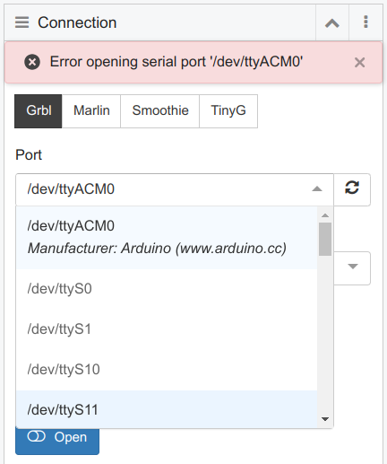

Steps to setup development environmnt
Instructions apply to cncjs version 1.10.1
install nvm
cncjs 1.10.1 will only run with node version 14.
nvm allows to choose the node version.
https://linuxhint.com/ways-install-use-nodejs-ubuntu/
curl -o- https://raw.githubusercontent.com/nvm-sh/nvm/v0.39.1/install.sh | bash
log out and back in so that .bash_rc is run
List available versions:
nvm list-remote
Install node
Install node version 14 by
nvm install 14
Install yarn
Install yarn:
npm install -g yarn
Initial project install
yarn
Initial project build
Important!
First change node version to 14
nvm use 14
Then
yarn build
Steps to run cncjs
Testing without Arduino board
https://cnc.js.org/docs/faq/#testing-without-arduino-board
Arduino Serial Port Permission
Arduino Mega is connected and port appears as /dev/ttyACM0
However, error message appears as
Error opening serial port

https://www.arduino.cc/en/Guide/Linux#toc6
Test current permissons:
ls -l /dev/ttyACM*
gives
crw-rw---- 1 root dialout 188, 0 5 apr 23.01 ttyACM0
so root is owner.
Solution: add our user to the group:
usermod -a -G dialout user
To put the change into effect:
logging out and back in should theoretically work,
but in my case, only rebooting worked.